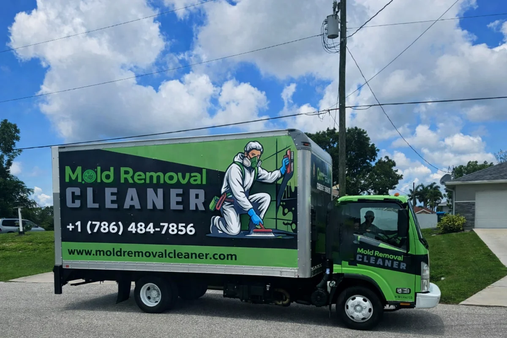

Mold Removal Cleaner provides certified mold inspection, removal, and remediation services across Miami, Orlando, Tampa, Jacksonville, and St. Petersburg. Our licensed specialists use advanced moisture detection, strict containment protocols, and eco-safe treatments to eliminate mold at its source. We deliver fast response, detailed reporting, and industry-compliant solutions for healthier residential and commercial indoor environments.
Reliable Mold Remediation Services in Orlando, Florida
Orlando’s subtropical climate keeps humidity high all year, creating constant mold pressure. Summer thunderstorms, daily afternoon rain, and hurricane season add repeated moisture. Homes near Lake Eola, the Butler Chain of Lakes, and theme park areas face even higher risk. Properties in Winter Park, Lake Nona, and Downtown Orlando often deal with hidden mold behind walls and under flooring.
We provide professional mold remediation services in Orlando designed for these exact conditions. We remove mold completely using EPA-approved methods and prevent it from returning. Our team contains affected areas, treats contaminated materials, and improves moisture control inside the home.
Mold remediation goes beyond surface cleaning. We identify water sources, correct humidity issues, and restore safe indoor conditions. Orlando’s climate means mold always follows moisture, so we fix the cause, not just the symptom.
You receive clear findings, safe treatment, and long-term protection.
If you notice musty odors, staining, or recent water damage, schedule a remediation assessment today.

Why Comprehensive Mold Services in Florida Are Vital
Certified Remediation Industry Professionals
Our technicians follow established remediation standards and stay trained on current safety practices. We understand how Orlando’s subtropical climate, lake proximity, and seasonal storms affect building materials. Using proper containment, protective equipment, and EPA-approved treatments, we remediate mold thoroughly. Homeowners in Winter Park, Lake Nona, and Downtown Orlando benefit from knowledgeable service that reduces recurring issues and protects long-term property value.
Advanced Moisture Detection Technology
Mold remediation only works when the moisture source is identified. We use professional moisture meters, thermal imaging, and air testing tools to locate hidden damp areas behind walls and under flooring. This technology allows targeted remediation instead of guesswork. Accurate detection helps us treat affected areas completely, preventing lingering moisture from triggering new growth after the project is finished.
Long Term Mold Prevention
Orlando’s high humidity, daily summer rain, and hurricane season create ongoing mold risks. We address ventilation gaps, insulation issues, and water intrusion points that support growth. Our remediation process includes guidance on humidity control and property maintenance. By solving moisture problems along with contamination, we help reduce future outbreaks, keeping homes safer and indoor air healthier year-round.
Secure Your Home’s Health Today
Contact our Florida experts for a free, detailed assessment.
Our Proven Mold Remediation Process in Orlando Homes
Orlando’s humidity, storms, and nearby lakes create constant mold pressure. Our step-by-step remediation process treats contamination, corrects moisture problems, and restores safe indoor conditions using professional methods customized to local climate challenges.
Step #1 Detailed Moisture Assessment And Mold Contamination Evaluation
Mold remediation starts with understanding how moisture fuels growth. Orlando’s subtropical climate, daily summer rain, and hurricane season create damp conditions inside walls, attics, and crawlspaces. We inspect visible and hidden areas using moisture meters and thermal imaging. This helps us locate water intrusion from roof leaks, condensation, or plumbing issues. We also assess contamination levels to determine how far mold has spread. Homes in Winter Park, Lake Nona, and Downtown Orlando often show hidden damp zones linked to lake effects and humidity. This evaluation allows us to design a precise remediation plan that addresses both mold and moisture sources.
Step #2 Containment Setup to Stop Mold Spore Spread
Disturbing mold without control can release spores into clean areas. We prevent this by building sealed containment zones around affected spaces. Barriers and negative air machines keep contaminated air from traveling through the property. We also protect HVAC systems and household items. Orlando homes face higher risk because humidity helps spores settle and grow quickly. Proper containment keeps indoor air safer and allows our team to remediate mold without spreading contamination. This step ensures the rest of the property stays protected while work continues, reducing disruption and maintaining a controlled environment during the remediation process.
Step #3 Safe Removal and Targeted Antimicrobial Treatment Application
Mold damages drywall, wood, and insulation over time. Surface cleaning alone does not solve the issue. We remove contaminated materials that cannot be restored and clean salvageable surfaces carefully. Then we apply EPA-approved antimicrobial treatments to eliminate remaining spores. This process reduces the chance of regrowth, which is crucial in Orlando’s humid environment. We follow strict safety practices to protect occupants and workers. Addressing affected materials thoroughly ensures the structure becomes clean and stable. By combining removal with professional treatment, we restore safe indoor conditions and prepare the area for repairs or restoration.
Step #4 Moisture Correction and Long Term Prevention Planning
Remediation succeeds only when moisture problems are solved. Orlando’s high humidity, thunderstorms, and proximity to lakes like Lake Eola create ongoing risks. We identify ventilation issues, drainage problems, and insulation gaps that allow dampness to linger. Homeowners receive guidance on humidity control, airflow improvement, and maintenance steps. Correcting these conditions helps stop mold from returning. Our prevention-focused approach protects structural materials and indoor air quality over time. This final step ensures your property stays safer even during Orlando’s wettest months, giving you lasting confidence in your home’s condition.
We remediate mold in homes, addressing walls, ceilings, attics, and crawlspaces. Our team removes contamination and corrects moisture issues to restore safe indoor conditions.
Commercial Mold Remediation
Businesses rely on us to treat mold while minimizing disruption. We remediate offices, retail spaces, and facilities using containment and professional treatment procedures.
Attic and Crawlspace Remediation
These areas trap moisture and often develop hidden mold. We remove affected materials, treat surfaces, and improve ventilation to reduce humidity buildup.
HVAC System Mold Treatment
Mold inside HVAC systems spreads spores throughout the property. We clean and treat system components to protect indoor air quality.
Post Water Damage Remediation
Leaks and storms create conditions for mold growth. We remediate contaminated areas and correct moisture sources after water-related incidents.
Preventive Moisture Control
We address ventilation, insulation, and humidity problems. Managing moisture helps reduce the risk of future mold growth in Orlando homes.
Mold emergencies escalate quickly in Orlando’s humid climate. Summer thunderstorms, daily afternoon rain, and hurricane season bring sudden moisture that soaks walls, flooring, and insulation. Homes near Lake Eola, the Butler Chain of Lakes, and theme park areas often experience rapid humidity spikes that accelerate mold growth.
Mold Removal Cleaner provides emergency mold remediation services designed for these urgent situations. We respond quickly across Winter Park, Lake Nona, and Downtown Orlando to stabilize conditions before contamination spreads. Fast containment protects unaffected areas and helps control indoor air quality during stressful events.
Special services include post-storm remediation, leak-related mold treatment, attic and crawlspace emergencies, and HVAC contamination cleanup. Orlando’s subtropical climate means moisture lingers, so we focus on rapid drying and source correction alongside remediation. Acting early reduces structural damage and limits health risks.
Our emergency process begins with immediate assessment and moisture detection. We isolate affected zones, remove contaminated materials, and apply antimicrobial treatments right away. This approach helps stop mold from spreading while restoring safe indoor conditions.
We also support insurance-related situations. Our team documents damage, explains findings clearly, and outlines next steps so homeowners stay informed. When mold becomes urgent, you need fast action, local knowledge, and proven remediation methods. That is exactly what we deliver for Orlando properties facing sudden moisture and mold challenges.
Mold Can Spread Fast, Call now
Delaying inspection can risk your health and property.
Credentials That Give Orlando Homeowners Confidence
Choosing a team for permanent remediation requires proven expertise. Our qualifications are your assurance of a job done right the first time. We combine certification with deep local knowledge.
Certified Remediation Specialists
Our technicians hold recognized certifications in mold inspection and remediation. Ongoing training keeps our team current with safety standards and effective treatment methods suited to Florida’s humid environment.
EPA Approved Procedures
We use EPA-approved antimicrobial products and follow established remediation protocols. These procedures remove contamination safely while protecting indoor air quality and occupants during treatment.
Advanced Detection Technology
Professional moisture meters, thermal imaging, and air testing tools help us locate hidden mold and damp areas accurately. This ensures thorough remediation without unnecessary damage.
Florida Climate Experience
Years of hands-on work in Orlando give us deep understanding of humidity, storms, and lake effects. We personalize every remediation plan to local environmental conditions.
Do you offer mold remediation services across Florida or only Orlando?
Yes, we provide mold remediation services statewide. While Orlando is a key service area, our teams respond throughout Florida with consistent service quality, fast scheduling, and climate-specific expertise for every property.
How much does professional mold remediation usually cost in Florida homes?
Costs depend on contamination size, material damage, and moisture sources. After inspection, we provide clear estimates. Early remediation often lowers expenses by preventing structural damage and limiting the spread of mold.
How quickly can your team start remediation after mold is discovered?
We offer prompt scheduling and emergency response in many locations. Quick action helps contain mold, reduce health risks, and prevent further property damage caused by moisture and contamination.
How long does a typical mold remediation project usually take?
Small projects may finish within one day, while larger jobs can take several days. Timing depends on contamination extent, drying requirements, and repairs needed to restore safe conditions.
Do you guarantee mold will not return after remediation services?
We remove mold completely and address moisture sources. While no home stays risk-free, our treatment methods and prevention guidance greatly reduce the likelihood of future mold problems.
Do you provide documentation for insurance claims and property transactions?
Yes, we provide inspection reports, photos, and service records. This documentation supports insurance claims, real estate transactions, and maintenance planning while confirming professional remediation procedures were completed.
Protect Your Orlando Property Before Mold Gets Worse
Mold problems rarely stay small in Orlando’s humid environment. Summer thunderstorms, daily rain, and hurricane season moisture allow growth to spread behind walls and under floors quickly. Waiting increases repair costs and raises health concerns for everyone inside the home.
Mold Removal Cleaner makes mold remediation straightforward. We inspect carefully, explain findings clearly, and treat contamination using proven methods designed for Florida conditions. You receive honest guidance, professional care, and solutions that focus on long-term moisture control.
Whether you manage a home or property, early action protects your investment and indoor air quality. Our local team responds quickly and works thoroughly to restore safe, stable conditions.
Do not let hidden moisture turn into major structural damage. Contact us today for a free estimate and clear answers about your property’s condition.